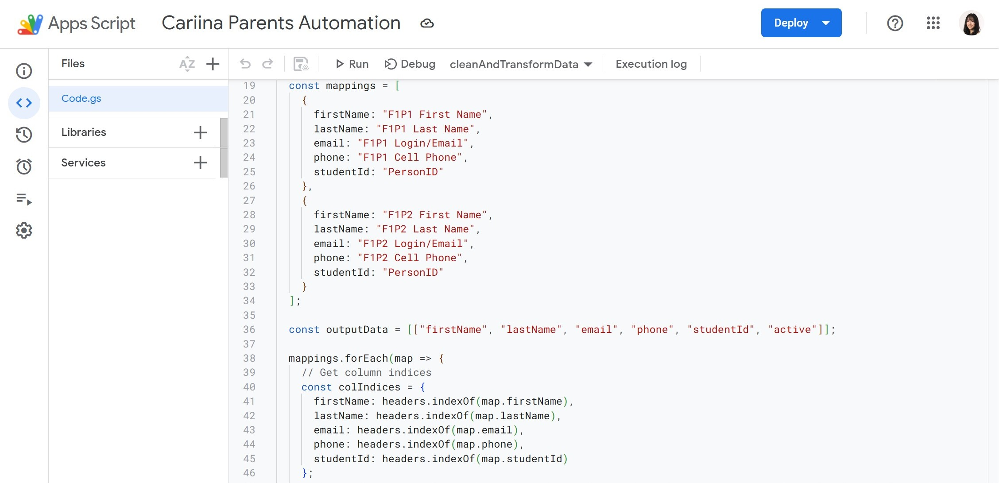

Dashboards for districts that had stopped logging in.
My roleBuilt the district dashboards and the cleanup automation. Made the case to the CEO, with the interview data, that the quiet districts had stopped logging in since they could not see what the product was already telling them.
The Problem
Cariina helps K-12 schools centralize fragmented workflows across transportation, discipline tracking, supply requests, and forms. Schools would onboard, use one feature, then go quiet. When I arrived, 20 districts had essentially stopped logging in, and the default hypothesis from leadership was that they needed more features to stay engaged. I did not think that was it, since those districts had never used the features they were already paying for, so I went and asked them.
The Insight
I interviewed 15 administrators and heard the same thing in different words:
"We have the data. We just don't know what it's telling us."
Schools already had the tools turned on and sitting unused, since nobody had ever walked them through what their own data said.
What I built
Thread 1: Making value visible.
For each of the 20 quiet districts I went through usage data they had already been generating and built them a dashboard out of it. The patterns were mundane and useful: when supply requests spike, which students keep getting flagged, which bus routes run empty, where people start a form and abandon it halfway. Each one ended with two or three things that district could actually do that month. Then I emailed the administrators myself: "I found something in your data. Want to walk through it?"
Administrators who had been ignoring the generic check-in emails for months answered that one. I think that is because it arrived with a specific finding attached instead of a request for their time.
Thread 2: Fixing the operational friction underneath.
While building the dashboards I kept hitting the same internal bottleneck, which was the weekly bus assignment upload. Each district cost about 30 minutes of hand cleanup, and it was the same renaming, deleting of empty rows, and reformatting every week. I built a Google Apps Script, which is a small program that runs inside a Google Sheet, with a one-click "Clean Up Data" button. I left a reusable template and a short tutorial behind so teammates could point it at other clients. Processing time dropped from 30 minutes to about 3 seconds, saving 50+ hours of internal work over the summer.

Thread 3: Making the answers self-serve.
The same questions kept coming back on training calls. I sorted them by who was asking and what they were trying to get done, then made 15 short tutorial videos, one per question. I put them where the question actually comes up, inside the relevant product flow rather than in a help center nobody opens.
An administrator told me the first cut was too long and too technical. I was defensive about that for about a day before I recut them. After the rollout, installs on the mobile app grew about 25% week over week, 15 more schools activated, and the team stopped spending afternoons on the same call.
The Pushback
When I told the CEO the solution wasn't more features, I got genuine skepticism: "We need new functionality to win renewals." I pushed back with the interview transcripts, since 15 administrators had already told me they could not read the data they had. A sixth feature on a product nobody opened was not going to change that. It was an uncomfortable conversation, and the only reason I could hold my side of it was that I could quote administrators back to him.
Results
- 17 of 20 inactive districts started logging in again (85%)
- 15 custom dashboards built
- 10% → 60% of staff using the standardized forms
What I learned
The cleanup script is still running. I left the template and the tutorial behind, so teammates kept pointing it at other clients' uploads after I was gone, and the 30-minute job stayed a 3-second one. The videos are still sitting inside the product flows where the questions come up.
The dashboards are the part I think about. The administrator who told me they had the data and could not read it was in one of the 20 quiet districts, and hers was one of the 17 that came back. What I built her was about ten minutes of work on data she had been generating for two years.